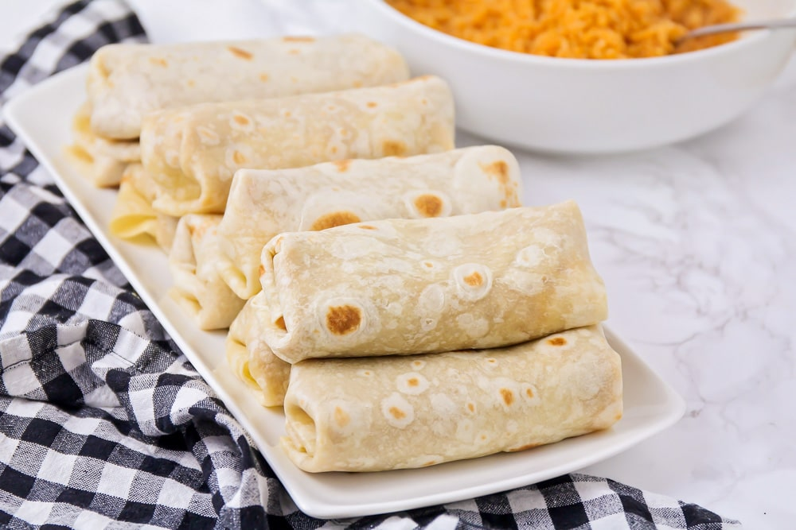

Easy Burritos

Description
Extremely simple and bare bones bean and cheese burrito that tastes quite good with hot sauce!
Ingredients
Tortillas
Canned refried beans
Shredded cheese of choice
Steps
Open can of refried beans and stir into bowl.
Cover bowl and place in microwave for 2-3 minutes until warm. Remove and stir.
Heat frying pan and add tortilla.
Place shredded cheese on one half of tortilla and fold other half over. Press occasionally with spatula.
Flip tortilla occasionally. Once cheese has melted transfer tortilla to plate peel tortilla open.
Scoop in desired amount of beans, fold and serve.